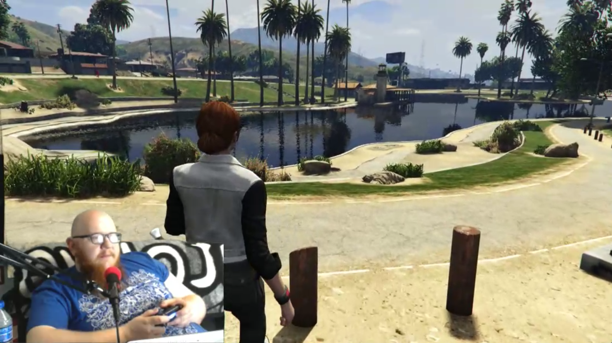
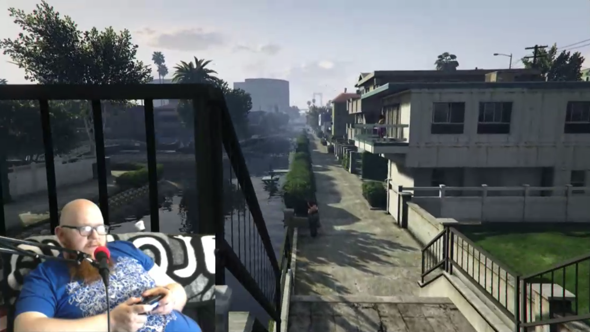
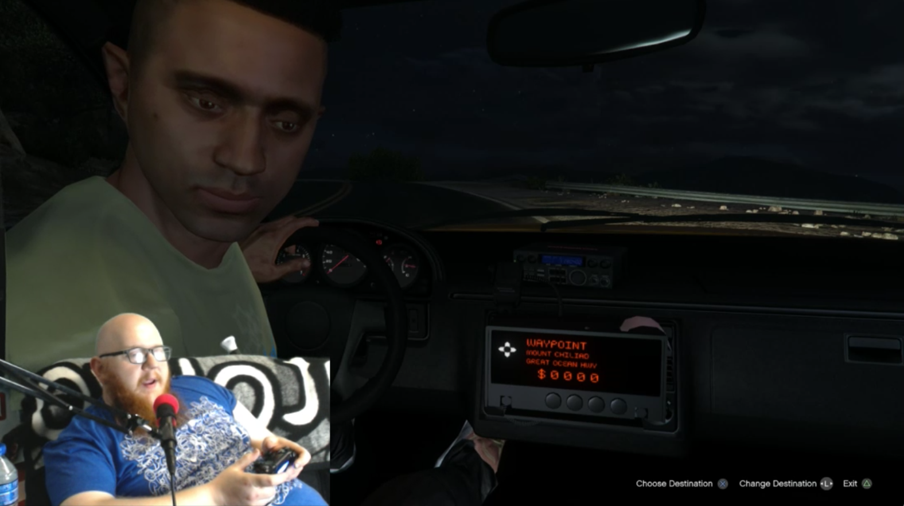
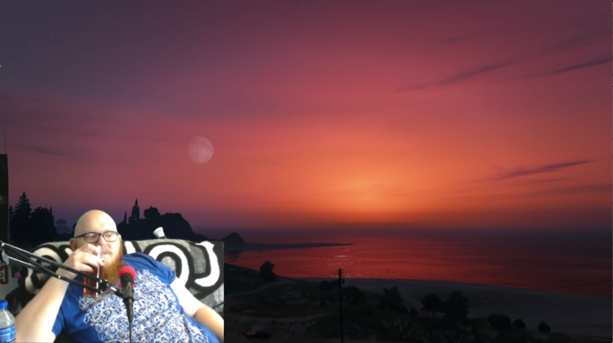
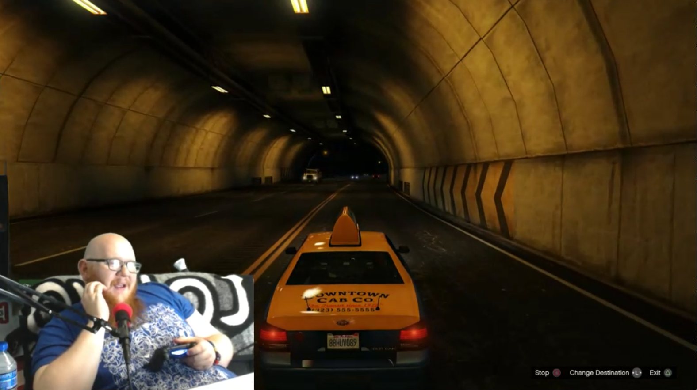
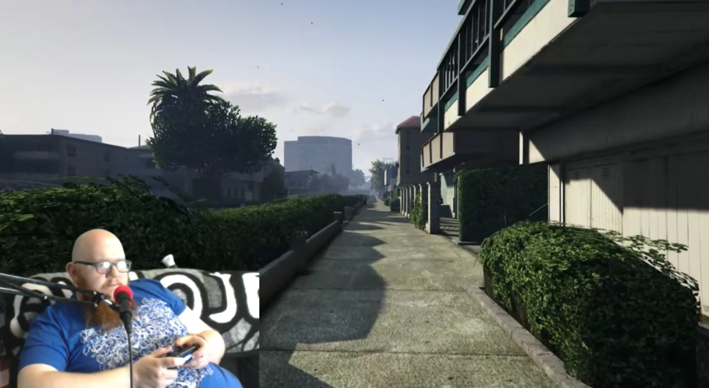

Lost Angeles is a collaboration with Derm "PasticheOfSkin" McGuigan of Ireland.
McGuigan actively streams his own games and playthroughs on the live-streaming videogame website Twitch.TV to an online audience.
In Lost Angeles, McGuigan became a virtual flanêur, attempting to tour the virtual recreated city of Los Angeles as portrayed in the videogame world of Grand Theft Auto. His adventures and live commentary are improvised explorations, informed by tourist guides, websites and
online articles.
"i gave the whole thing an arc. from Confused bewilderment and displacement at its beginning, to making use and sense of the world, to Natural discovery and delights in finding the Hollywood stars on the boulevard, Chinese threatre, the Flamingo boating lake as well as a personal favourite the LA 'River' seeing the pleasures in the manmade but lyberinthine city juxtaposed by a final ejection from the city in a dark loop of suicide and reincarnation via foolish choices to basejump from the Hollywood sign topped off with a succesfull jump from the top of the mountain after sharing a personal tale of triumpth closing on a still Nature shot in the last 10 minutes with little to no interruption as time lapses from dusk to deep night and ends with the game Ejecting me from the reality due to 'Idling'"
--Derm 'PasticheOfSkin' McGuigan
Scholar
Zena Bibler's essay
The Flaneuse in the Virtual City about the work Lost Angeles.
Abstract
In this essay, I contemplate the role of video gamer as flâneur in Lost Angeles, a three-hour video work by Lee Tusman that captures the wanderings of gamer Derm McGuigan within the virtual world of Los Santos. With the help of Lena Hammergren’s “The re-turn of the flâneuse” I will consider how the video, originally conceived of as a project of “virtual flânerie,” might fall more accurately under the domain of the flâneuse, who uses the kinesthetic as a way to enter previously inaccessible spaces. As McGuigan moves his avatar through Los Santos, he integrates stimuli from the game with his own physical memories, indexing a series of other places and times as he goes. Lost Angeles also complicates the concept of the flâneuse through the presence of the avatar, who serves as the primary mode of navigation, but also offers kinesthetic information to the player. These relationships become more intricately entangled with the entrance of an additional set of spectators that watch McGuigan and his avatar via a live stream. Through this aggregation of wanderers, the flâneuse becomes unstable and multiplies, producing numerous other embodied relationships with the city of Los Santos and the body of the avatar [Which begs the question: Who and where is the flâneuse?] In this essay, I hope to demonstrate how, the proposal of Lost Angeles (to broadcast the wanderings of an expert gamer in a virtual space) collides with the structure of Grand Theft Auto (which invites the player into an ambiguous inside-and-outside location within Los Santos) and produces not one flâneur, but numerous flâneuses who traverse the virtual city via kinesthetic association with the avatar’s movements.
Additional links
PasticheOfSkin's YouTube Channel
PasticheOfSkin on Twitch




